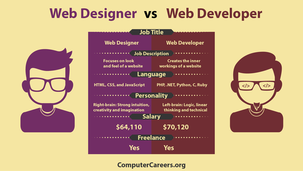

Employment opportunities are vast and cover almost every aspect of business and industry. From micro-controllers to dating apps, fields in web development interact with everything in our world today. People in every industry rely on web developers. Social media, advertising and game development are a few of the many examples of fields in web development.
Web development is an attractive career because of the versatility it offers you. Whether you like to work for yourself or for an agency, at home or across the world, web design has the opportunities you are looking for.